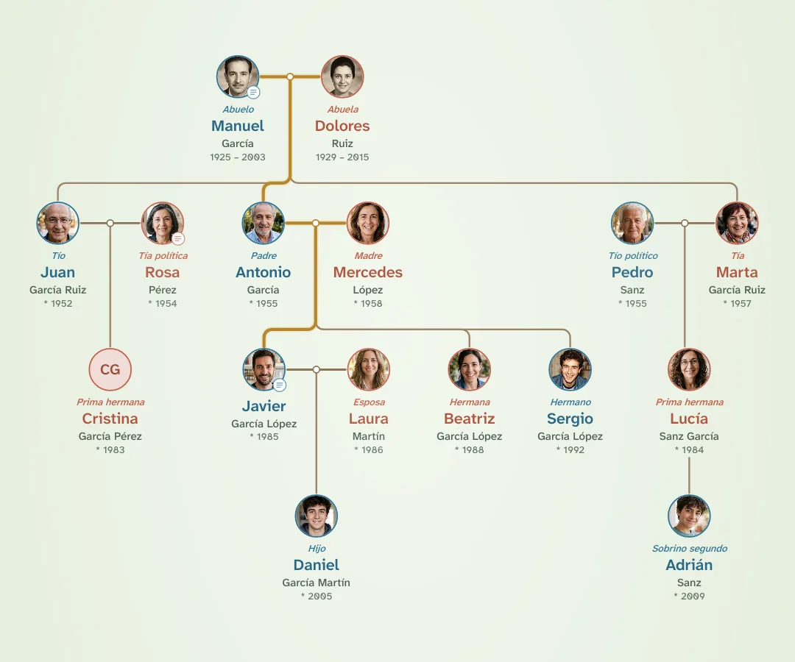

Calculadora de parentesco: qué es un primo segundo, un tío abuelo o un sobrino nieto
¿El hijo de tu primo es tu sobrino o tu primo? ¿Qué es exactamente un tío segundo? Elige dónde está el antepasado que tenéis en común y la calculadora te dice el nombre del parentesco y su grado de consanguinidad.
El antepasado común es la persona de la que descendéis los dos. Con un primo hermano son vuestros abuelos; con un primo segundo, vuestros bisabuelos. Si uno desciende del otro (un nieto, una bisabuela), elige «Soy yo» o «Es la otra persona».
Cómo se llama cada parentesco
Todo depende de cuántas generaciones hay desde cada uno de vosotros hasta el antepasado común:
- Hermanos: tenéis los mismos padres.
- Primos hermanos: tenéis los mismos abuelos. Sus padres y los vuestros son hermanos.
- Primos segundos: tenéis los mismos bisabuelos. Vuestros padres son primos hermanos entre sí.
- Primos terceros: compartís los tatarabuelos.
- Tío abuelo: el hermano de tu abuelo. Tú eres su sobrino nieto.
- Tío segundo: el primo hermano de tu padre o de tu madre. Tú eres su sobrino segundo.
Así que el hijo de tu primo hermano no es tu primo: es tu sobrino segundo, y tú eres su tío segundo. Y tus hijos y los suyos sí son primos segundos entre ellos.
Tabla de parentescos
Busca en la fila qué es el antepasado común para ti, y en la columna qué es para la otra persona. En la casilla está lo que es esa persona para ti (en femenino: tía, prima segunda, sobrina nieta…).
| Para ti ↓ · para la otra persona → | Padres | Abuelos | Bisabuelos | Tatarabuelos | Trastatarabuelos |
|---|---|---|---|---|---|
| Padres | hermano | sobrino | sobrino nieto | sobrino bisnieto | sobrino tataranieto |
| Abuelos | tío | primo hermano | sobrino segundo | sobrino nieto segundo | sobrino bisnieto segundo |
| Bisabuelos | tío abuelo | tío segundo | primo segundo | sobrino tercero | sobrino nieto tercero |
| Tatarabuelos | tío bisabuelo | tío abuelo segundo | tío tercero | primo tercero | sobrino cuarto |
| Trastatarabuelos | tío tatarabuelo | tío bisabuelo segundo | tío abuelo tercero | tío cuarto | primo cuarto |
Grados de consanguinidad
El grado es el número de generaciones que separan a dos personas. Se cuenta subiendo desde una hasta el antepasado común y bajando después hasta la otra. Es el que se usa en el Código Civil, en las herencias y en los permisos del trabajo:
| Grado | Familiares |
|---|---|
| 1.º | Padres e hijos |
| 2.º | Abuelos, nietos y hermanos |
| 3.º | Bisabuelos, bisnietos, tíos y sobrinos |
| 4.º | Tatarabuelos, tataranietos, primos hermanos, tíos abuelos y sobrinos nietos |
Con la familia de tu pareja (suegros, cuñados…) el parentesco es por afinidad y tiene el mismo grado que ella tiene con ellos: los suegros, en primer grado; los cuñados, en segundo.
Tu árbol, con el parentesco de cada uno
En Ramo no hace falta calcular nada: activa «Parentesco» y cada tarjeta del árbol dice qué es esa persona de la persona principal (padre, tía, primo hermano, sobrina, cuñado, yerno…), también con la familia política.

Es gratis para empezar, y el árbol se comparte en PDF con toda la familia para que cada uno vea dónde encaja.
Más guías